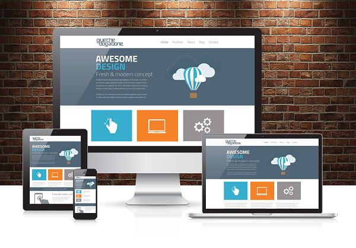
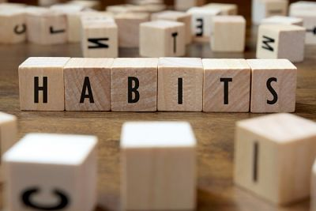

BLOGS
cultural
daily mindfulness
Of the three suggested practices in 'Search Inside Yourself', the one that appeals to me the most is the 'one breath a day', as I think starting small and setting acheivable goals is a great way to get a pratice like this going...
technical
javascript basics
From a functionality point of view, JavaScript allows us to make static web pages much more interactive, with elements that respond to actions to produce a desired result...
cultural
the meditation process
The 'process over product concept' was something I really struggled with for this sprint essentially because it meant finishing my site when I wasn't 100% happy with it...

technical
Design to web
Making a website responsive means users can view it on a range of different devices - from mobile phones, to tablets, to desktops - and the site will always look great and function exactly how it's supposed to...

cultural
emotional intelligence
In Chapter 1 of 'Search Inside Yourself' the author give us a summary of what Emotional Intelligence is and how important it is in all facets our lives, both personal and professional...

technical
html, css, and the dom - part 2
Grid based design is a way of laying out a web page using a grid structure, made up of rows and columns. For responsive design, the most common grid layout utilises 12 columns, and a total width of 100%, and will shrink and expand as you resize the browser window...
technical
html, css, and the dom - part 1
The best analogy I have heard to describe HTML, CSS and the DOM is based on the concept of a house. HTML (HyperText Markup Language) is the house, it has a structure - rooms, windows, stairs etc...

cultural
time and habits
Time Management: Not my strong suit. I am one of those perpetually late people who's friends make up meeting times of half an hour earlier just so I will be there on time...

cultural
reflecting on EDA
The EDA experience seems very different from the conventional types of higher learning that I'm used to. Already EDA seems very welcoming, collabrative and open, especially in the fact that you are starting to form relationships with people prior to even meeting them!